Допустим у нас есть файл JS в котором мы моздали функцию которая возвращает наибольшее число
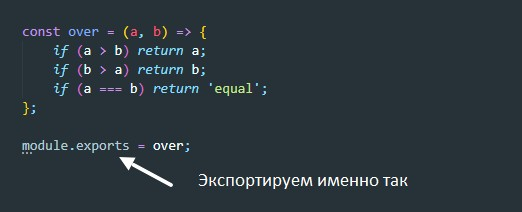1 Для тестирования создаем файл который называем test.js
2Теперь нам необходимо установить тестировщик (самые популярные это mocha и jest)
Для начала проинициализируем приложение
npm init -yДля начала рассмотрим mocha оф сайт - https://mochajs.org/
Для установки вводим команду в терминале
npm install --save-dev mochaПосле установки в package.json мы увидим mocha в разделе devDependencies
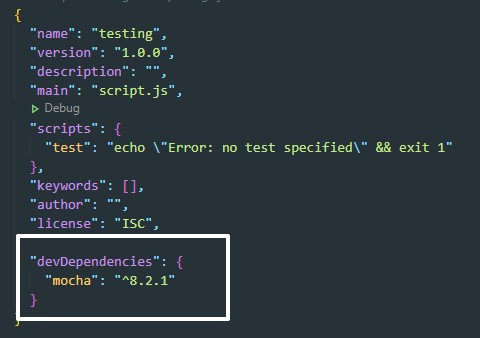3 Теперь нам нужно установить библиотеку для тестирования которая называется Chai оф сайт - https://www.chaijs.com/. Для установки вводим команду в терминале:
npm install chai -D4 Теперь открываем файл test.js
Первое что нужно сделать - это импортировать функцию assert из chai и конечно же импортировать нашу функцию over из файла JS
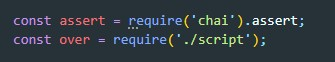Далее вызываем функцию describe которая принимает два аргумента: описание и колбек функцию. Этот колбек вызывает функция it которая так же принимает два аргумента : описание и колбек. Вот этот колбек уже вызывает функцию assert
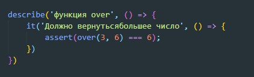Т.е. assert вызывает нашу функцию которую тестируем и проверяем чему должен быть равен результат.
Что бы запустить тест открываем package.json и в разделе scripts прописываем команду
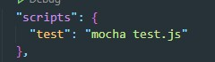Теперь что бы запустить тест в терминале вводим команду
npm run testВ результате мы увидим вот такой ответ
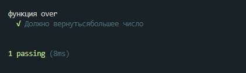5 проверка с помощью expect
Подключаем функцию expect
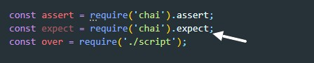И немного поменяем функцию over
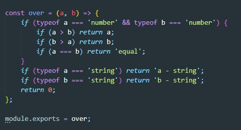Теперь добавим еще один тест
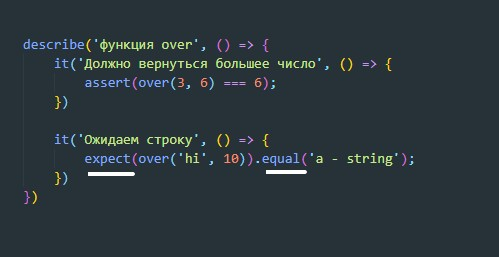Можем одновременно задавать несколько тестов
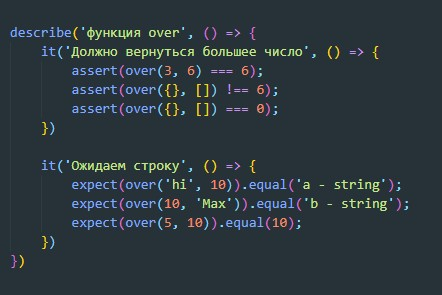Оф сайт - https://jestjs.io/
Для установки вводим команду в терминале
npm install --save-dev jestПосле установки JEST устанавливаем BABEL
npm i -D babel-jest @babel/core @babel/preset-envДалее добаляем файл для настройки babel - babel.config.js
В этот файл копируем вот такой код
В package.json в scripts добавляем команду
Файл который мы будем тестировать будет создавать объект по классу
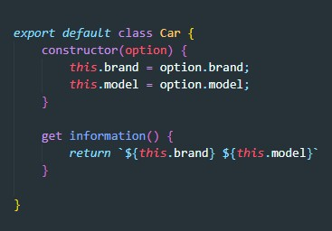Теперь создаем файл с посфиксом - spec car.spec.js
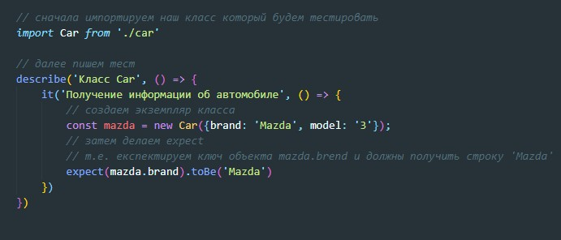Чтобы запустить тест в package.json добавляем строчку script
Для запуска в консоле вводим команду
npm run testJest